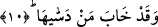

atfedilir. Nitekim âyette: “Tarafımızdan ona kalb yumuşaklığı ve temizlik de
(verdik).” (Meryem, 19/13) buyrulmuştur.
10. Onu kötülüklere gömen de ziyan etmiştir.
Kâmûs’ta der ki: “Hâbe” mahrum kaldı, hüsrana uğradı, örttü ve arzuladığı şeye
ulaşamadı demektir. “Dessâ” gizledi demektir. Râğıb der ki: “Dess” bir şeyi bir çeşit
zorlama ile birlikte bir şeyin içerisine sokmak demektir. “Dessâhâ” ise nefsini
mâsiyetlere ve günahlara soktu demek olur.
Âyetin mânâsı şöyledir: Nefsini eksik bırakan ve günahlara gömen, onu tabîî
şehvetlerin peşine salıveren ziyan etmiş, hüsrana uğramıştır.
Şeyhim ve senedim (Osman Fazlı Efendi) (k.s) “Nefse ve onu yaratana…” âyeti
hakkında şöyle der: “Burada “nefis”ten maksad sûret-i ilâhiyye-i cem‘iyye-i kemâliyye
üzere ona ayna olması için yaratılmış zât ve hakîkat-i cem‘iyye-i insâniyye-i
kemâliyyedir. Nitekim bir haberde şöyle vârid olmuştur: “Allah Adem’i kendi sûretinde
yarattı.” [115] Bedeni çekip çeviren bu nefse “nefs-i nâtıka” da denir.
“Ve onu yaratana” yâni onu düzgün ve kabiliyetli yaratmıştır ki kemâl, celâl ve
cemâl taayyünlerinin tecellîlerine tecellîgâh olsun. Mutavassıt ve mümkin olarak
yaratmıştır ki zâtının, sıfatlarının ve fiillerinin zuhûrâtının mazharı olsun. Mûtedil ve
sâlih yaratmıştır ki Allah’ın isimlerinin, mertebe, hal ve eserlerinin müşâhede edildiği
yer olsun. İşte cemal ve celal kabzalarını bir arada bulunduran bu kabiliyet ile o her
mevcudun en mükemmeli olmuştur.
“Ona” yâni celâlin hâdimi/melek vâsıtasıyla “kötülüğünü” yâni berzahî hakîkatinin
cem’iyyetinde münderic olan celâlin eserlerini; akâid, ilim, amel, mezhep ve bunların
dışında insanı günaha sokan, haktan batıla doğru kaydırıp da hüsranla
cezâlandırılmasına sebep olan başka şeylerden celâlin hükümlerini ve hallerini “ve
takvâsını” yâni cemâlin hâdimi/melek vâsıtasıyla şeriat ve tarîkat mertebesinde şirk,
küfür, açık hevâ ve diğer fesada zıt olan ilmî-resmî kelime-i tevhîd; ma‘rifet ve hakîkat
mertebesinde şirk, küfür, gizli hevâ ve geri kalan kesat işleri ortadan kaldıracak olan
aynî-hakîkî kelime-i tevhîd; bu iki tevhid dışında ilim ve ma‘rifetlerin inceliklerini,
amel ve hallerin güzelliklerini, ahlâk ve sıfatların övülen ve güzel olanları gibi cemâlin
eserlerini, onunla ilgili hususları ve hükümleri “ilham edene” ifâza edene/aktarana
“yemin ederim ki”
“Nefsini kötülüklerden arındıran” onu bütün durumlarda celâlin eserlerinin
rezilliklerinden temizleyen kimse sûreten ve hakîkaten ve bütün mertebelerde
“kurtuluşa ermiştir.” felaha girmiştir.
“Onu kötülüklere gömen” yâni nefsinde celâlin eserlerini, nefsânî sıfatları gizleyen,